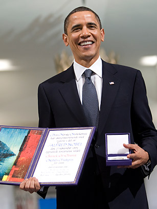

Barack Obama with the Nobel Peace Prize.
Awards and Distinctions
- Nobel Peace Prize (2009):
Awarded the Nobel Peace Prize in 2009 for his extraordinary efforts to strengthen international diplomacy and cooperation between peoples.
-
Grammy Award for Best Spoken Word Album (2006, 2008, 2020):
Received three Grammy Awards for the audio versions of his memoirs, "Dreams from My Father" (2006), "The Audacity of Hope" (2008), and "A Promised Land" (2020).
-
Time Person of the Year (2008, 2012):
Named Time magazine's Person of the Year in 2008 for his historic election as the first African American president and again in 2012 for his re-election and continued impact on global events.
-
Profile in Courage Award (2017):
Presented with the John F. Kennedy Profile in Courage Award in 2017 for his enduring commitment to democratic ideals, his efforts to expand healthcare, and his leadership on the Paris Agreement on climate change.
-
Presidential Medal of Freedom (2017):
Awarded the Presidential Medal of Freedom, the United States' highest civilian honor, by President Barack Obama in 2017 for his exceptional contributions to public service.
-
NAACP Image Awards (Various):
Received multiple NAACP Image Awards for his outstanding contributions to civil rights and social justice.
-
Robert F. Kennedy Human Rights Ripple of Hope Award (2018):
Honored with the Ripple of Hope Award for his dedication to civil rights, social justice, and human rights.
-
Order of Abdulaziz Al Saud (2009):
Received the Order of Abdulaziz Al Saud, the highest Saudi Arabian decoration, in recognition of his efforts to strengthen U.S.-Saudi relations and promote global peace.
-
Ambassador of Conscience Award (2008):
Awarded the Ambassador of Conscience Award by Amnesty International in 2008 for his exceptional leadership in advancing human rights and upholding the values of justice and equality.
-
German Media Prize (2008):
Acknowledged with the German Media Prize in 2008 for his outstanding contribution to fostering transatlantic relations and promoting a new climate of cooperation.
Contributions
- Community Organizing and Civil Rights Advocacy:
Before entering politics, Barack Obama dedicated several years to community organizing in Chicago. As a community organizer, he worked with churches, schools, and local organizations to address issues such as job discrimination, housing, and economic inequality. This experience laid the foundation for his commitment to social justice and civil rights.
-
Illinois State Senate (1996-2004):
Obama served in the Illinois State Senate from 1996 to 2004, representing the 13th district. During his tenure, he played a key role in passing legislation on issues such as healthcare, ethics reform, and criminal justice. Notably, he was involved in the creation of the state's first earned-income tax credit for the working poor.
-
U.S. Senate (2005-2008):
Elected as the junior U.S. Senator from Illinois in 2004, Obama quickly gained recognition for his bipartisan efforts and his focus on issues affecting middle-class Americans. He worked on legislation related to ethics, lobbying reform, and nuclear nonproliferation. His willingness to collaborate across party lines was evident in partnerships with senators on both sides of the aisle.
-
Affordable Care Act (Obamacare):
One of Obama's most significant contributions was the passage of the Affordable Care Act (ACA) in 2010. The ACA aimed to increase access to healthcare by expanding Medicaid, protecting individuals with pre-existing conditions, and establishing health insurance marketplaces. The legislation represented a landmark achievement in U.S. healthcare reform.
-
Economic Recovery and Wall Street Reform:
In response to the 2008 financial crisis, President Obama signed the Dodd-Frank Wall Street Reform and Consumer Protection Act into law in 2010. The legislation aimed to regulate the financial industry, prevent future economic crises, and protect consumers from predatory practices.
-
Foreign Policy Achievements:
Obama's contributions extended to the global stage. His administration played a crucial role in negotiations leading to the Iran Nuclear Deal in 2015, aimed at preventing Iran from developing nuclear weapons. Additionally, the signing of the Paris Agreement in 2016 demonstrated his commitment to addressing climate change on an international level.
- Social Justice and Criminal Justice Reform:
Throughout his presidency, Obama advocated for criminal justice reform, emphasizing the need to address systemic issues such as mass incarceration and racial disparities in law enforcement. He took steps to reduce mandatory minimum sentences for nonviolent offenses and worked towards fostering trust between communities and law enforcement.
-
Education Initiatives:
Obama prioritized education as a key avenue for societal progress. His administration launched initiatives such as "Race to the Top," which encouraged states to adopt education reforms, and "My Brother's Keeper," aimed at addressing persistent opportunity gaps faced by boys and young men of color.
-
Global Health Initiatives:
Under Obama's leadership, the United States played a significant role in global health initiatives, including the President's Emergency Plan for AIDS Relief (PEPFAR) and the President's Malaria Initiative. These programs aimed to combat the spread of HIV/AIDS and malaria in vulnerable populations around the world.
-
Barack Obama's contributions span a wide range of policy areas, reflecting his dedication to social justice, healthcare reform, diplomacy, and economic recovery. His legacy continues to shape political discourse and influence the direction of policy initiatives in the United States and beyond.